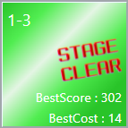

セレクトモードは、自由にステージを選んでゲームをプレイするモードです。
一度クリアしたステージでも、より高いスコアを目指して繰り返しプレイしていただけます。
8ステージで1エリアが構成されます。
各エリアのステージには、〇-1～〇-8という名前がつけられています。
エリアが変わると新しいギミックが登場したり、全体的に難易度が上がります。
各エリアの7ステージ目と8ステージ目は、そのエリアの総まとめとなっています。
そのため、同じエリアの他のステージと比べて、難易度が高めになっています。
ただし、どのステージに挑むにも、前のエリアをすべてクリア済みにするなどの条件は必要ありません。
各ステージ名が表示されたパネルをクリックすると、そのステージをプレイできます。
クリア済みのステージには、STAGE CLEAR の画像と、
これまでに出した最高のスコア、これまでのクリア時最小スコアが表示されます。

左上の「クリア状態をリセットする」をクリックすると、スコアの記録がすべて削除されます。
元に戻すことは不可能なので注意してください。(削除前に確認画面が表示されます)